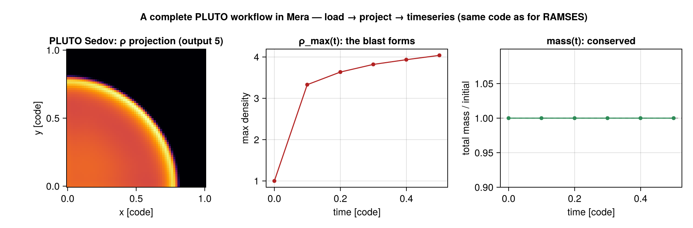
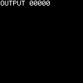
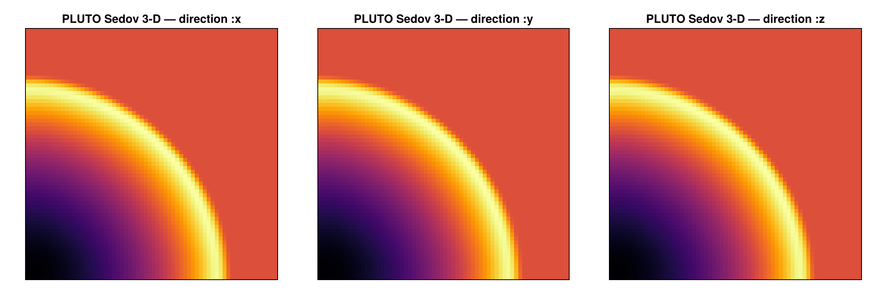
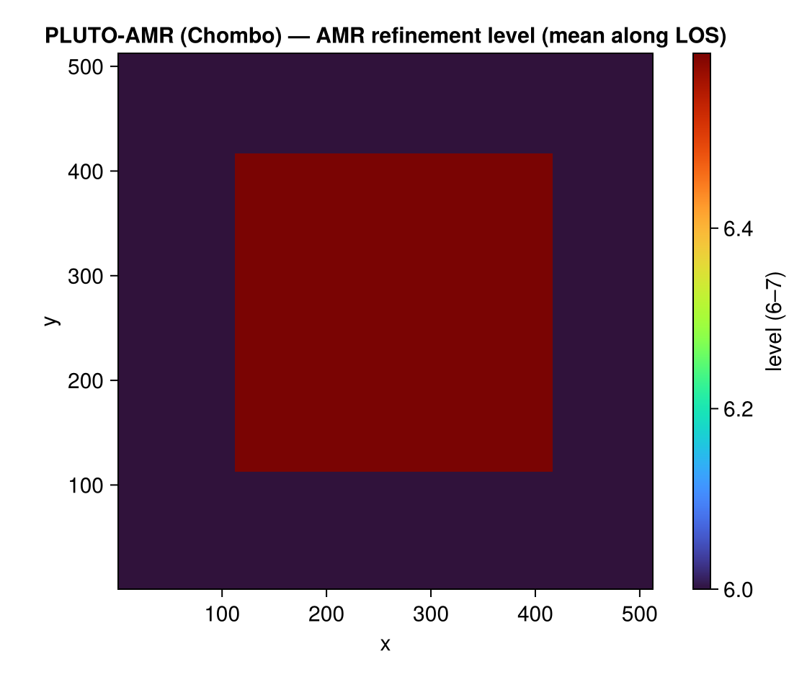

Reading PLUTO data (experimental)
Mera's analysis began as a RAMSES tool, but the analysis layer is code-blind: it works on a generic uniform/AMR cell list, not on RAMSES file formats. This page adds a frontend for the PLUTO code that reads PLUTO's static-grid output into the same Mera structs — so getvar, projection, pdf, timeseries, and the rest run on PLUTO data unchanged.
The frontend reads both of PLUTO's output formats into the same Mera structs: static uniform grids (grid.out + .dbl) and AMR (the Chombo .hdf5 format, see below). Scope: 3-D, Cartesian, power-of-two base grid. PLUTO test problems are dimensionless, so data load in code units.
Usage
The normal getinfo / gethydro entry points auto-detect the code — nothing special to call:
julia> info = getinfo(5, "/data/pluto_sedov3d"); # detects PLUTO (grid.out + dbl.out)
Code: PLUTO
output: 5 time: 0.5 [code units]
grid: 64³ uniform Cartesian, level 6, boxlen = 1.0
variables: (rho, vx, vy, vz, p)
-------------------------------------------------------
julia> gas = gethydro(info); # branches on info.simcode → the PLUTO frontendThe overview reports the code, the uniform 64³ grid (mapped to Mera level = log₂64 = 6), the box length and the variable list — the same overview a RAMSES snapshot prints.
getinfo sniffs the directory for each code's signature files; the detected code is stored in info.simcode ("PLUTO" / "RAMSES") and printed in the overview. Force it with code=:
info = getinfo(5, path; code=:pluto) # or :ramses, or :auto (the default)The low-level frontend functions are also exported if you want them directly: getinfo_pluto(output, path) and gethydro_pluto(info).
gethydro honours the RAMSES spatial-window arguments xrange/yrange/zrange (with center/range_unit), so you can load only the part of the box you need — the same selection the upstream readers offer (see Reference readers):
gas = gethydro(info; xrange=[0.0, 0.5], yrange=[0.25, 0.75], range_unit=:standard) # a sub-boxThe selection acts on the leaf cells, so it is an exact, hole-free filter and the returned object records the window in gas.ranges; resolution is chosen later at analysis time (projection(…, res=)), not at load.
Data is loaded per type, exactly as for RAMSES: gethydro always, and getparticles when a PLUTO particle file is present (info.particles == true). PLUTO snapshots carry no separate gravity dataset.
gas is an ordinary HydroDataType (uniform grid, columns :cx,:cy,:cz, :rho,:vx,:vy,:vz,:p), identical in shape to what the RAMSES uniform-grid reader produces. Everything downstream just works:
msum(gas, :Msol) # (code units here)
projection(gas, :rho) # the exact off-axis projection engine
pdf(gas, :rho) # density PDF
p = face_on(gas); projection(gas, :sd; los=p.los, up=p.up, center=p.center)What it reads
PLUTO's static-grid output (the format documented by PLUTO's own pyPLUTO reader):
grid.out— geometry, per-axis cell count and edges → the cell centres.dbl.out— one row per snapshot: time, file mode (single_file), endianness, and the variable names.data.NNNN.dbl— the raw double-precision data (single-file, x1 fastest).
PLUTO variable names are mapped to Mera's canonical symbols: rho→:rho, vx1/vx2/vx3→:vx/:vy/:vz, prs→:p (and bx1/2/3→:bx/:by/:bz for MHD).
How it fits Mera's architecture
The frontend is a sibling reader: it fills the existing InfoType / HydroDataType structs (simcode = "PLUTO", levelmin == levelmax, boxlen, the scale, the cell table in the RAMSES coordinate convention). It changes nothing in the analysis layer — that is the whole point. The one thing the reader must get exactly right is the cell-coordinate mapping (cell centre = (c − 0.5)·boxlen/2^level); the reader is validated against pyPLUTO (the density peak and every value match cell-for-cell).
This is the proof-of-concept for multi-code support: a new code = "write a reader that fills the structs," not "rework Mera." Other Eulerian codes (Enzo, FLASH, Athena++) can follow the same pattern.
A complete PLUTO workflow
Because PLUTO data lands in the standard structs, the entire Mera workflow runs on it — identical to the RAMSES tutorials. Here is load → inspect → projection → time-series → movie → PDF, end to end, on a 3-D Sedov blast (6 PLUTO outputs):

using Mera
path = "/data/pluto_sedov3d"
# 1. load — getinfo auto-detects PLUTO and prints "Code: PLUTO"
info = getinfo(5, path)
gas = gethydro(info)
# 2. inspect / derive quantities — getvar works unchanged
extrema(getvar(gas, :rho)) # density range
getvar(gas, :cellsize)[1] # = boxlen / 2^level
msum(gas) # total mass (code units)
# 3. projection (the exact off-axis engine)
p = projection(gas, :sd, res=512, center=[:bc], direction=:z)
# heatmap of log10.(p.maps[:sd]) over p.extent → the blast's shock front
# 4. time-series over all 6 outputs (discovery reads PLUTO's dbl.out)
ts = timeseries(path, d -> (rho_max = maximum(getvar(d, :rho)), mass = msum(d));
time_unit = :standard)
# columns: output | time | rho_max | mass (ρ_max rises 1 → 4 as the blast forms)
# 5. a movie of the blast (frames from the 6 outputs → GIF)
mv = getmovie(path, :rho; time_unit = :standard)
savemovie(mv, "pluto_blast.gif"; tags = :output)
# 6. the density PDF
P = pdf(gas, :rho)
# 7. persist a map / cube the JLD2 way (opens in h5py too)
savemap(p, "pluto_rho.jld2")
Projecting the loaded blast along each axis shows the spherical shock front directly — the column density rendered along x, y and z with the same projection call used for RAMSES (the Sedov test runs in one octant, so the shell appears as a quarter-circle from each direction).
Show the CairoMakie code
using CairoMakie
fig = Figure(size=(1150, 380))
for (i, dir) in enumerate((:x, :y, :z))
Σ = projection(gas, :sd, res=512, center=[:bc], direction=dir).maps[:sd]
ax = Axis(fig[1, i]; title="PLUTO Sedov 3-D — direction :$dir", aspect=DataAspect())
hidedecorations!(ax)
heatmap!(ax, log10.(Σ' .+ 1e-30); colormap=:inferno) # transpose: array (col,row) → (x,y)
end
save("pluto_projection.png", fig, px_per_unit=2)
Every step above is the same call you would make on a RAMSES snapshot — that is the whole point of the code-blind analysis layer.
PLUTO particles
If a PLUTO run wrote Lagrangian particles (particles.NNNN.dbl), getinfo flags them and getparticles reads them into a Mera PartDataType — so the particle analysis runs unchanged:
info = getinfo(5, "/data/pluto_run") # info.particles == true if a particle file is present
part = getparticles(info) # → PartDataType (:x,:y,:z, :id, :vx,:vy,:vz, …)
getvar(part, :vx); msum(part) # the usual particle analysisThe PLUTO particle format (an ASCII # header — field_names/field_dim/nparticles/ endianity — followed by particle-major binary) is read directly; field names map to Mera symbols (x1→:x, vx1→:vx, …), extra fields keep their names.
PLUTO AMR (Chombo)
PLUTO's AMR output uses the Chombo box-structured HDF5 format (shared with Orion and other Chombo codes). The frontend reads it too — getinfo auto-detects a .hdf5 snapshot and loads the level hierarchy as a Mera AMR HydroDataType:
info = getinfo(0, "/data/chombo_run") # detects the Chombo .hdf5 → "Code: CHOMBO"
gas = gethydro(info) # → AMR HydroDataType (a :level column)
projection(gas, :rho) # the analysis runs unchanged on AMR dataThe reader flattens the levels to a leaf-cell list (a coarse cell is kept only where it is not refined by a finer level) and maps each cell to Mera's (level, cx, cy, cz) convention — Chombo level-0 of N₀ cells per axis becomes Mera level log₂N₀, each finer level adds one (ref_ratio = 2). Variable names are mapped per code: PLUTO (rho, vx1…, prs) directly; Orion (density, X/Y/Z-momentum, energy-density) with velocity = momentum/density and pressure derived from the energy. The leaf extraction is validated cell-for-cell against an independent reader.
A windowed load prunes box I/O here too: with xrange/yrange/zrange set, only the Chombo boxes whose extent intersects the window are read from the HDF5 file (the level geometry, hence the leaf/covered logic, still uses every box), so a sub-region costs a fraction of the snapshot.
Because the :level column survives into the standard struct, the AMR structure is itself plottable — a volume-weighted mean level along the line of sight shows where the grid refines (here a self-gravitating isothermal sphere refined toward its centre, Mera levels 6 → 7). The full CairoMakie code is identical to the Athena++ AMR map:
Show the CairoMakie code
using CairoMakie
m = projection(gas, :level, res=512, center=[:bc], direction=:z, weighting=[:volume]).maps[:level]
fig = Figure(size=(560, 470))
ax = Axis(fig[1,1]; title="PLUTO-AMR (Chombo) — AMR refinement level (mean along LOS)",
xlabel="x", ylabel="y", aspect=DataAspect())
hm = heatmap!(ax, m; colormap=:turbo)
Colorbar(fig[1,2], hm, label="level (6–7)")
save("pluto_amr_levels.png", fig, px_per_unit=2)
HDF5 reading uses HDF5.jl (a dependency of Mera). Requires a power-of-two base grid and ref_ratio = 2 (the common PLUTO/Chombo case).
Reference readers
This frontend is built to agree with the origin tools — the readers that define PLUTO's output formats and their selection semantics:
pyPLUTO— PLUTO's own Python reader, which documents the static-grid (grid.out+.dbl) layout this frontend parses. Mera's coordinate mapping is validated against it cell-for-cell.- yt — reads PLUTO's Chombo-HDF5 AMR output through its
chombofrontend, and selects sub-volumes lazily via data objects (ds.box,ds.sphere,ds.r[...]). Mera's load-timexrange/yrange/zrangemirrors that region-selector behaviour on the leaf-cell list.
PLUTO test problems are dimensionless (code units) and carry no CGS factors — exactly as both readers above assume; the run's units live in its compiled definitions.h, not in the snapshot.
See also
getvar,projection,pdf,timeseries,getmovie— the analysis that now runs on PLUTO data.getinfo/gethydro— the RAMSES equivalents this mirrors.